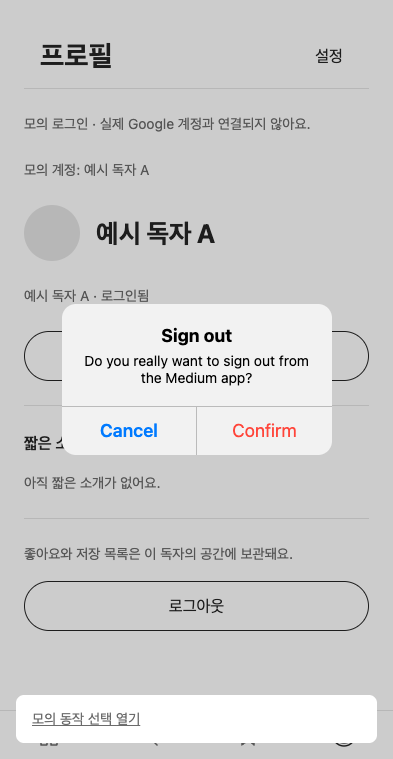
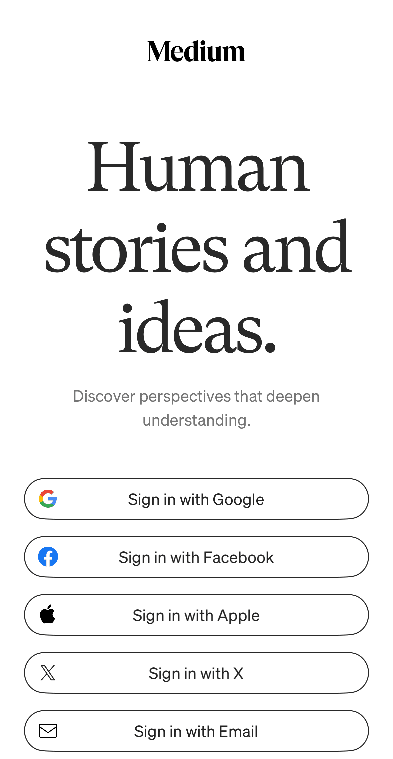
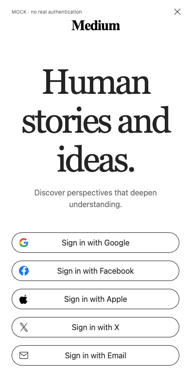
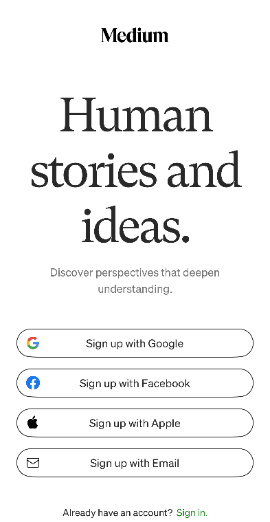
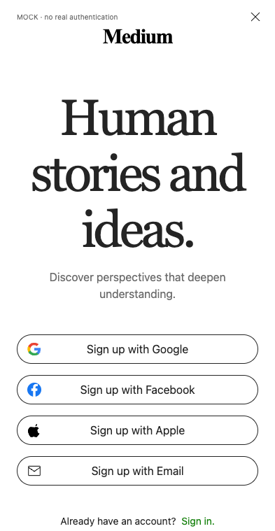

Reference: 1179×2556 normalized to393×852, OS top59/bottom34 cropped. Implementation: actual393×759 browser capture. Cropping does not establish device DPR. The logout dialog is compared separately from its background (profile now, original Settings); Goal20 connects Settings. Mock controls are explicit additions. Font, icons, inaccessible source content and mock menu behavior remain different; no100%claim.
Logging in / 02_sc_e4d414380a1047a2b7970cf7869a0866


Logging in / 01_sc_d55739aa2ac1495da026006235e7c0a7


Profile/Settings/Logging out / 02_sc_2d1afd7a02a347868564f9757753d077
